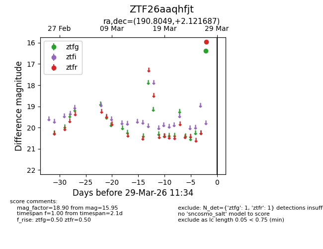
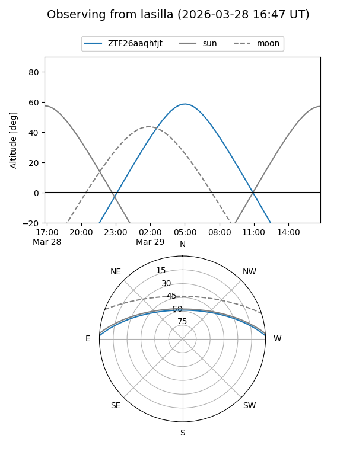
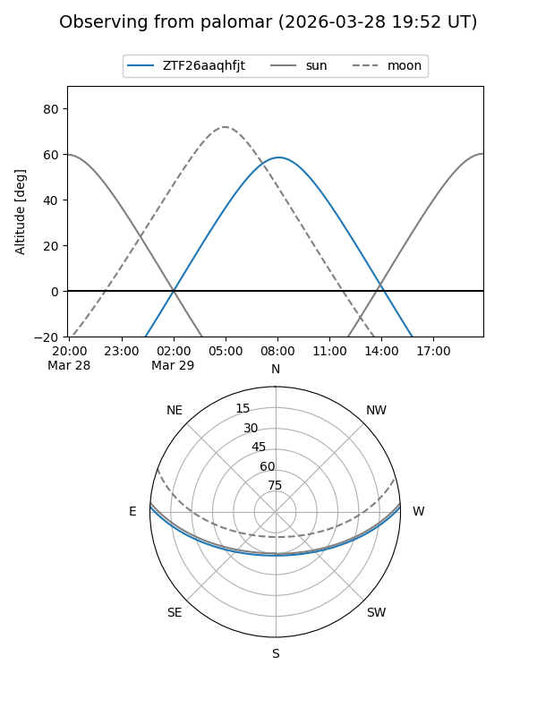

ZTF26aaqhfjt
Target ZTF26aaqhfjt at 2026-03-29 11:37
Aliases and brokers:
FINK: link
Lasair: link
ALeRCE: link
alt names
ZTF26aaqhfjt (ztf,fink_ztf)
Coordinates:
equatorial (ra, dec) = 190.8049,+2.12169
equatorial (HMS+DMS) = 12:43:13.17,+02:07:18.07
galactic (l, b) = (298.0841,+64.91605)
Flags:
Photometry:
last ztfg=16.38, ztfr=15.95
1 ztfg, 1 ztfr detections
Lightcurve

Visibility


Additional plots